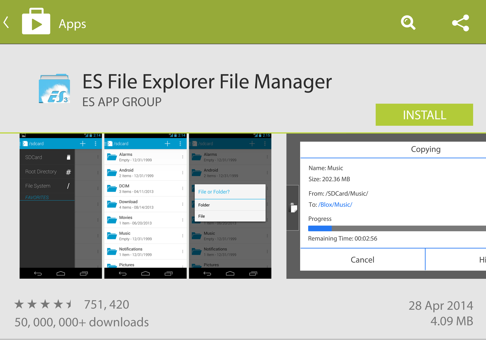
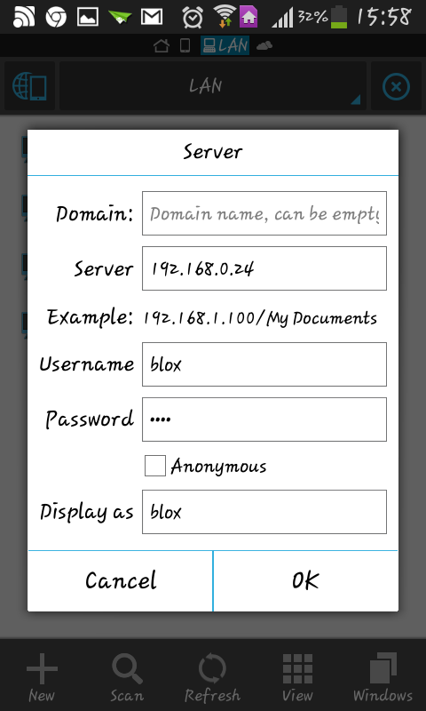
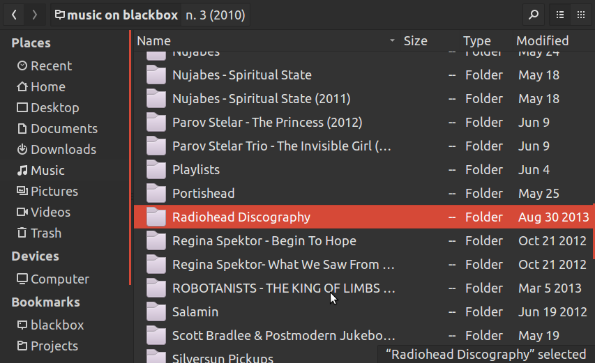
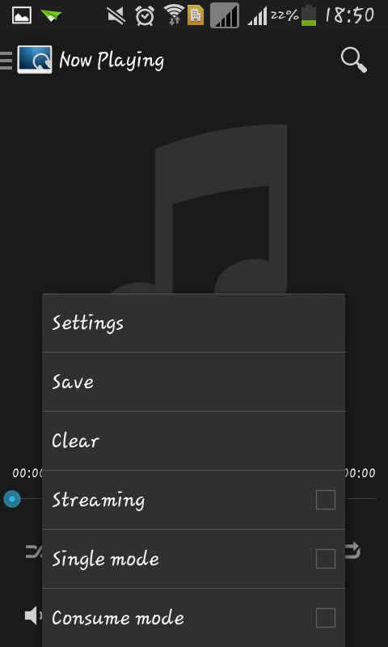
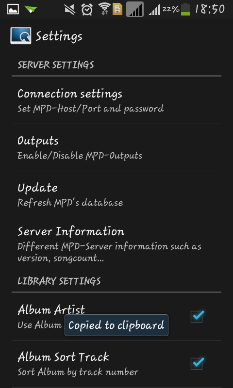
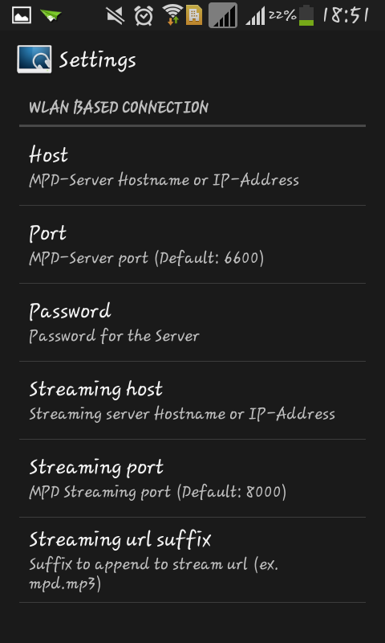
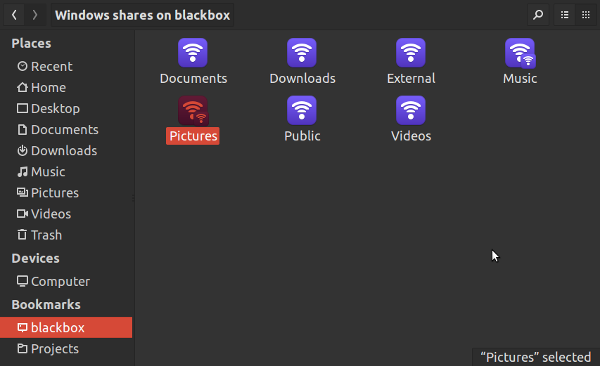
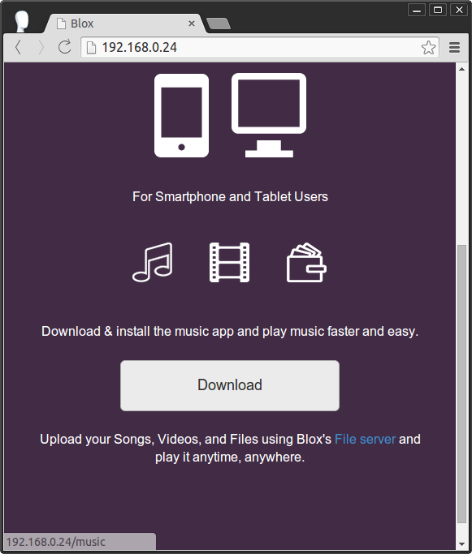

Welcome to Blox’s User Guide!¶
Contents:
Initial Setup¶
You need the following in order to turn Blox on.
- Monitor or TV with HDMI connection
- 1 usb keyboard
- 1 usb mouse
Blox needs these equipments to turn on and boot up. Afterwards, these equipment can be removed.
Getting Started¶
Blox’s main page is where you can control and play your music, videos, and pictures. It also contains information on how to access your Blox’s features.
Blox main page is already available tat the startup of the Blox computer. You can access the Blox’s user web site in other browser by using Blox’s hostname or IP address.
Accessing your Blox using Hostname¶
Using hostname to access Blox’s user webpage can only be used by Desktops and Laptops.
- Open your browser(Chrome, Firefox, etc)
- Type in the address bar: blox/ or blox.local/

Accessing your Blox using IP address¶
You can access Blox’s user website in smarphones or tablets using Blox’s IP address.
- Open browser on your smarphone.
- Type in the address bar: 192.168.0.24

Your Files¶
One of the main features of blox is its File Server. Blox can store 1TB worth of Documents, Pictures, Videos, and Music.
There are 2 ways to access your file server. First is using dekstops/laptops and second is using your smartphone or tablets.
Using Desktops or Laptops¶
The first one is by using Desktop or Laptop computers.
- On your Desktop press start.
- Type \\blox\ or \\blox.local\*

- Press enter

Using Smartphone¶
You can also use Blox’s file server by using smartphone.
- Download and install android app ES File Explorer
- 
- Open the app and go to Network > Lan Settings
- Tap New in the bottom

- In the host field put the IP address of Blox 192.168.0.24
- 
In the username and password put blox
Click OK
Folder Structure¶
Blox file server contains the following:
- Documents Folder where you can store your documents.
- Music Folder where you store your Music Collection.
- Pictures Folder where you store your Picture collection.
- Video Folder where you store your Video collection sortedy by: Movies, Music-videos, home-videos, and others.
- Public Folder this is share to anyone.

Music¶

one of Blox’s main feature is playing, organizing, and sharing music. Once your playlist is et up, Blox can automatically play it. You can also remotely control your music using your phone, laptop or any other computer within your network.
Blox can be integrated to your audio system. Control it using your android phone, or any other computer within your network
Adding Music¶
Blox uses the Music Folder in its File Server to find and play Music
Go to File Server and open Music Folder

Store your music here

Accessing your Music Server¶
In your Blox open the application Cantata. It is already configured to play any Music inside the folder of Blox
Click cantata

Access through Application¶
Music server can be accessed in any Desktops or Laptops that has Cantata application installed.
Download and install Cantata. It is available for any OS.
Install Cantata
Configure Cantata
Name: Put any name here
Host: 192.168.0.24 or blox.local
Port: 6600
Password: blox
Music Folder: Leave it as is
Click Apply and Ok

Access through Smartphone¶
Music server can be remotely controlled using Android Phone. You just need the MPDroid application.
On your smartphone go to Blox home page.
Click on the Music Icon in smartphones
Choose your smartphone from the applications links. If you’re using android phone choose android application.
Open the application and go to settings.
Tap connection settings.
Choose Wlan based connection.
Choose your WIFI

Here are the settings to put:
Host: 192.168.0.24
Password: blox
Leave everything else as is
Press back until Now playing interface.

Your Videos and Pictures¶
Browser, Play, and Share your Videos and Pictures. Watch or view your videos and pictures on your smartphone, tablet, or TV.
Blox uses Plex media server for its backend in Video and Photo serving. Plex lets you browse, play, and share using Internet browser from your desktops or smartphones.
Storing Videos or Pictures¶
The first thing to do is to store your videos or pictures. You can store your Videos and Pictures in the File Server.
Open your file server using your desktop or smartphone.
- If you want to store your picture.
- Copy the picture you want to store.
- Open the Picture folder in the file server.
- Paste the picture.
- If you want to store your Videos.
- Copy the Video you want to store.
- Open the Videos Folder in the File Server.
- Paste the Video
Accessing your Media Server¶
Your Media Server can be accessed using the internet browser of your desktop or smartphones. You can also use applications such as Plex home theater or XBMC to access your media server.
Accessing though Internet Browsers¶
- Go to Blox’s Home page.
- 
- Click or tap the icon of Video.
Accessing through Application¶
You can use Plex Home Theater in Blox which can be remotely controlled using your smartphone.
- On the Blox Computer click on th icon of Plex Home Theater

If you are using windows you can download `Plex Home Theater<http://blackbox.local/static/others/pht.exe>`_